Mount Stuart North Ridge
Everyone has a climb that represents a milestone to them. Enhanced emotion, amazement, fear, or just long planning can give an ascent a mythic quality. My first climb of this nature was the West Ridge of Mt. Stuart. Steve and I went up there with our minimal competence and maximal gear, looking at the guidebook every few paces in case we got off route. Steve took a leader fall high on the mountain, and we spent an unplanned night out with the freezing moon.
Other “great peaks” for some reason have been Mt. Index North Peak, The Sassalungo with Mat and Piz Pordoi with Kris, Mesachie Peak, Fairview Dome, The Ptarmigan Traverse, and now, I think, the North Ridge of Mt. Stuart.
I arrived at Theron’s house Tuesday at 3:30 in the afternoon, fresh from a red-eye trip to Houston. My grandfather of 94 years died, and it was important for me to go to the funeral. He was a great old man, and will be missed, especially by my own father who cared for him in his final (10+?) years. I wish I made efforts to talk to him more in these last years.
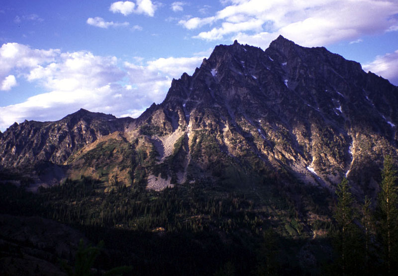
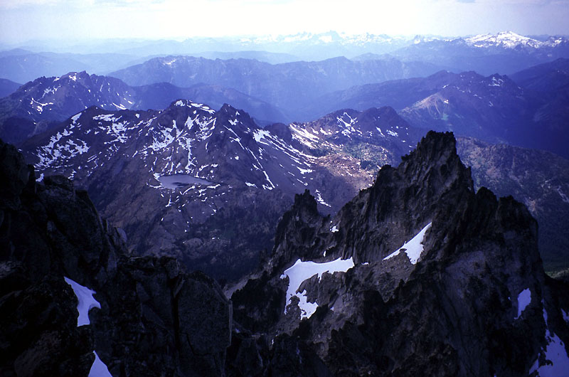
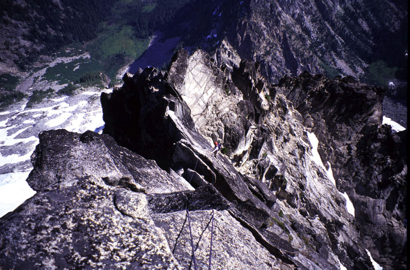
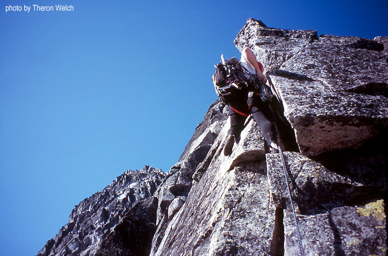
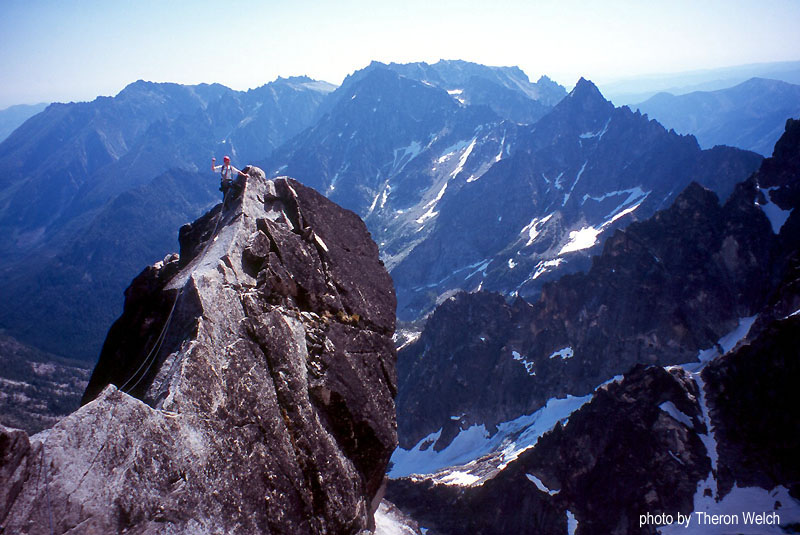
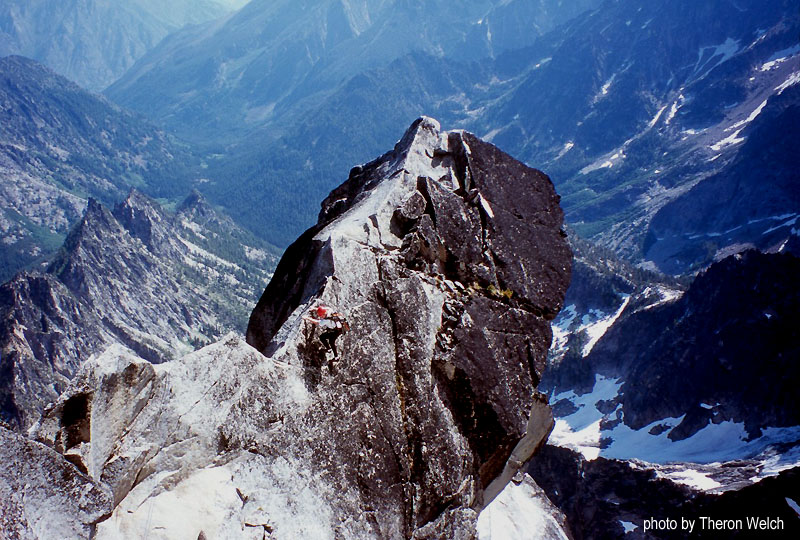
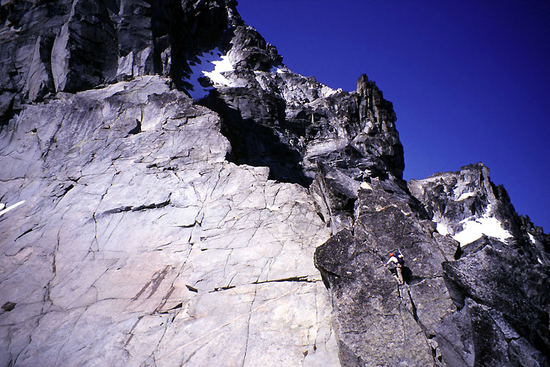
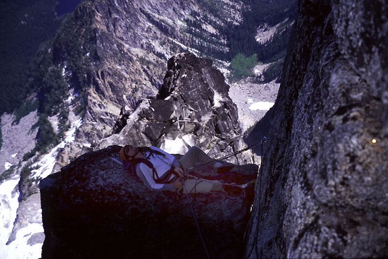
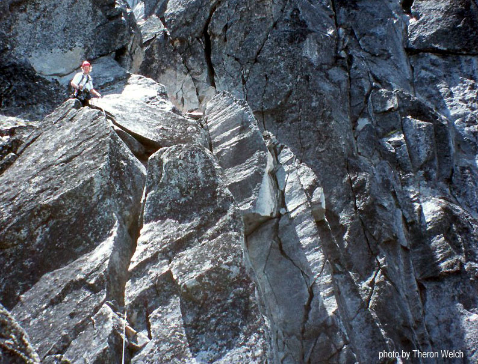
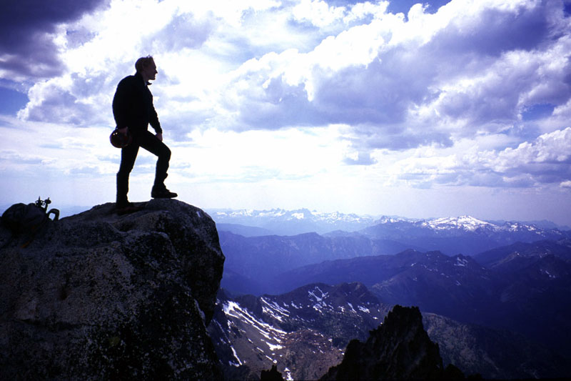
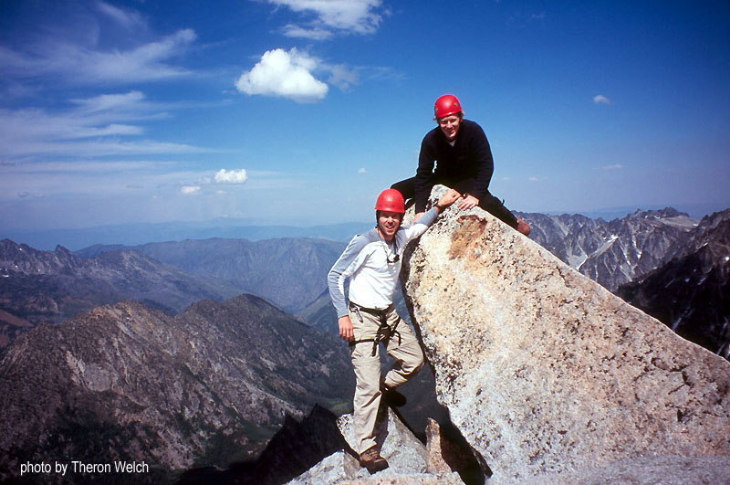
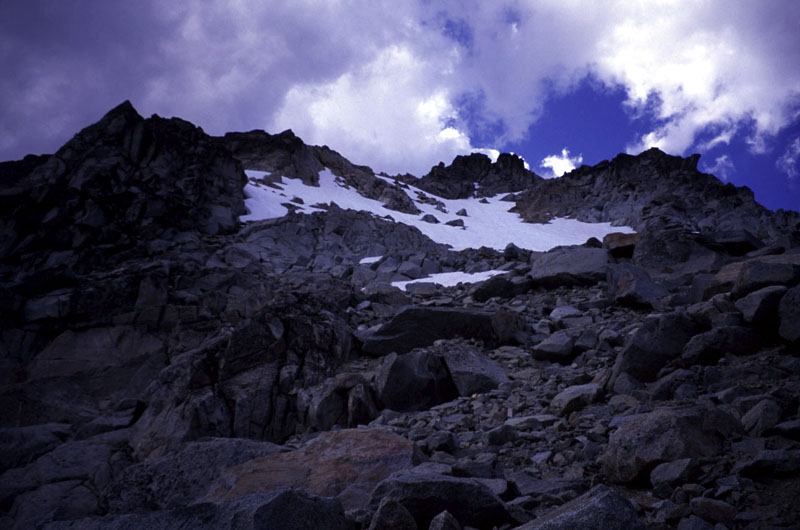
Theron and I talked, deciding at the last minute to come in over Ingall’s Pass rather than Mountaineer’s Creek because of reports that the Sherpa Glacier was breaking up and becoming troublesome. Anyway, it would be a nice change from Mountaineer’s Creek, which we’d been up several times already this year. I hadn’t been over Ingall’s Pass in 5 years!
We took bivy sacks and light sleeping bags to crash in near Ingall’s Lake, where we would leave gear for pickup later. For the route we took lightweight crampons and an axe. I considered these essential in retrospect. I know people are always making do with a sharp stick, or such things as one crampon on the downhill foot only. But they are so light that it’s worth taking them for me. We climbed on a doubled 60 meter 8.5 millimeter rope, that turned out to work very well. Our rack had a dozen nuts, 10 slings, and 11 cams, including a 3.5-Camelot-sized Metolius cam for the offwidth on the Gendarme. We kept that stowed in the pack until needed, and it was nice to have at that point. Our boots were light hikers, and we took comfortable rock shoes for the climbing.
Getting out of town was hard, we were delayed by various problems on my part. I had needed gear scattered between two cars, one of which Kris had at work. Also, my own car keys were locked in that car from the red-eye flight the night before. I got lucky and found a spare key, drove to work, took the keys from Kris’s purse, opened the car, got my sleeping bag, etc. And all this after I was already late to arrive at Theron’s house. We finally got completely out of town around 4 pm. Oh and I had to buy food - it just goes on and on! I was a very ill-prepared partner…
We started hiking around 6:30, and reached our designated campsite on the far side of Ingall’s Lake before dark. The mosqitoes were crazy, I finally used bug juice, which I haven’t used in years. They buzzed around but quit biting me for the night. Sleeping off and on, the night was clear and stars were beautiful.
We got up at 4:15, packed and started walking at 4:45. We were just able to see without headlamps. We followed a faint trail down and towards Stuart Pass, eventually losing it in a meadow. No matter - easy terrain took us gently up to the pass again. We marched up the ridge which became steep, requiring a little bit of scrambling and back-tracking. A defined trail took us to a high point just below the West Ridge of Mt. Stuart. Views of surrounding peaks became really good here. We stomped down on scree and snow onto a boulderfield below the steep Northwest wall of the peak, then worked our way back up to reach Goat Pass. It was kind of a lot of work to here, but we were at 7800 feet, and didn’t have to lose any more elevation. We put on crampons to cross the glacier over to the notch which would gain the crest of the North Ridge. We saw two people bivied on a rock outcropping halfway across the glacier. They looked at us too.
It was very easy crossing the glacier with crampons. After 5 minutes of exciting political discussion (something about Nader being propped up by smirking right-wing groups?), we joined the pair on their outcrop, and chatted for a while. They were also climbing the North Ridge. One of them had climbed it 5 times already, and just really enjoyed showing it to new people. We kept walking, soon realizing that we had been counting on finding some water somewhere before the ridge. I was almost out of water already!
We heard burbling in the jumble of ice chunks just uphill, and though it appeared dubious I convinced us to head up there a hundred feet or so. Amid ice chunks and a big moat we happily found a stream that was reasonable to get to. I climbed into a little ice cave and filled our Camelbacks. With this work out of the way, we could easily climb snow in the gully.
We had both forgotten gloves on this trip, so I was a little apprehensive about steep snow and frozen fingers. But the slope was very reasonable (40 degrees max?). Higher up, we got out of the central gully and climbed a sub-gully on the left after removing crampons. There were a few low-5th class moves on solid rock here, kind of exciting in boots. Still, we were at the notch in a matter of minutes, flaking out the rope and changing into rock shoes. The outcrop party began climbing the gully, possibly belaying fixed pitches.
Theron and I were really excited to be here. I especially had wanted to climb this route for a few years. Each year, something would come up. Last year, it was late-season fires that closed access to the area. It felt really great to finally be at “The Notch,” so often wondered about!
I started off, climbing easy ground up and slightly right to avoid a sort of licheny headwall. Soon I realized I would be on ledges avoiding the crest if I continued this way, so at a likely looking long double crack I started steeply up. The cracks accepted good protection despite the occasional festive growing plant lodged inside. On top, I set a belay in stacked blocks and videotaped Theron coming up. We’ve been taking Theron’s videocamera on just about every climb lately. It’s really fun to watch a movie later. I always worry about moving too slow with the camera, but we’ve done pretty well so far. One downside is that I take less pictures, so my set of slides from recent climbs is somewhat aneamic. But all in all, it’s fun. I could do hands-free belaying with the Petzl Reverso, and zoom in on Theron jamming and stemming his way up to the crest. The only lame thing is that union regulations require us to take a cameraman even though we’ll do all the filming ourselves. Jim sat beside me in a “Dark Crystal” T-shirt, sighing loudly.
Theron took off, going below a tower then up to a golden granite wall. I gave him a fixed belay from here, so he could enjoy steep climbing on cracks and nubbins. He continued along for a while while I followed the steep moves. It was a great pitch. Soon I caught him belaying at a block below big granite flakes heading back and skyward on the ridge. I wedged myself between two blocks, then launched into a glorious hand-traverse. I was flung skyward by the sheer rightness of it all! “Now we see why it’s a classic!” We had to take some pictures of this pitch, wanting to burn the memory in fiercely.
I belayed somewhere or another, and Theron led the last long bit of climbing to the base of the Great Gendarme. First there was a tower to downclimb, then a famous low-angle slab to walk up, then another great section of hand traversing on the ridge. Wouldn’t it be cool if the whole ridge was one long hand-traverse? We passed a few bivy sites in this area, and continued up the slab to the rappel station.
Now we had our choice: to Gen Darme or not? We hauled the big cam for it, so Gen Darme it is!! Of course I had to tape up, just by way of delaying the inevitable scariness. We ate some food, looking out at a sunny morning. It was probably around 10:30 am, and the Ice Cliff Glacier was booming and collapsing. The first Gendarme pitch has three distinct sections seperated by ledges. I would get a good piece as high as possible, then lieback upwards for a few moves, sometimes get in one more piece, then emerge on a ledge. Repeat. I did kind of a hand jam with my left hand and just grabbed the edge of the crack with my right. Very athletic and fun. The final move destroyed my composure though: a strenuous lieback brought me to the top of the pillar with no where else to move my hands up to. A bit flummoxed, I sort of crashed onto the pillar-top on hands and knees. Theron videotaped my rude mantelling gleefully (climbers don’t like to use their knees - bad style!).
Theron came up, falling once and generally finding it hard. Curiously, the final move gave him no trouble. We probably have a different hip to arm ratios or something wierd. Although my mouth filled with saliva in that way it does when you are going to something scary and unknown, I climbed up to a ledge and traversed right with the aid of a hand crack. Reaching the base of the notorious offwidth crack, now snaking above me for 50 feet, I laboriously hooked a bit of sling around a stone lodged inside. After some more delaying tactics, like taking pictures, I swung up into the crack, finding the occasional fist jam where it tapered down. “This is doable,” I thought, although not feeling very keen to look down at the vast blue slabs and ice chunks 1000 feet below! I got higher and placed a #3 Camelot. A few moves above I was in the widest part of the crack, and able to happily unload the Old Maid 3.5 Cam. After a short rest and a glance around at my forbidding surroundings I climbed up gradually easier ground to a roof, then veered right on ledges and cracks to a great belay ledge. It also looked like you could go straight up to the top of the Gendarme.
Wow, that was a great pitch! Theron found it kind of unpleasant, often ruminating that he really liked the lower part of the climb, saying a lot by omission! But he took a great picture looking down between his feet at the slabs below, and climbed up like a competent yeoman of the mountains. We were happy that our packs weren’t too heavy to require hauling, which people seem to regard as hideous work on these pitches (I’m not really sure why though?).
I led off again to gain the crest, making a creepy downclimb move to loose blocks on the way to a belay below a steep wall. We knew there was a final short pitch of 5.8-5.9 climbing here, so Theron sent me up a hand crack just right of a flaring chimney. I placed protection often, wondering if the crux would catch me unawares. But after a solid array of hand and foot jams, I emerged on top of the step. From here, Theron took off on a long simul-climbing pitch of 4th and low-5th class to the summit. It was very familiar, since we were there just two months before. That didn’t change the elation we felt at the views and contemplation of what we had come up.
We hiked down to reach snow below the false summit, having a much easier time than in May (falling through rotten snowfields into holes). The snow didn’t look fun to descend so Theron suggested scrambling down rock to the lowest point. This worked well, then we faced in and descended several hundred tedious feet of snow. Another change in conditions since May: then we happily plunge-stepped down this slope. An accident recently occurred here, I think someone slipped and broke their ankle.
Now for the long walk down the Cascadian Couloir. I had never descended the lower regions of this route, as Steve and I lost the trail and headed into brush further to the east. I wryly reflected that our brush descent of 1999 was probably easier than this “trail,” which became especially ugly in a steep watercourse. Theron and I sketched around on dirt slopes 100 feet above the stream, really hating it. I guess we’d gotten off route, but a bunch of cairns led us up there and dropped us off! It was such a bad feeling, being tired from the climb, and descending far below your alpine camp into the deep green valley. At the base of the “couloir,” I was especially exhausted. Theron was pugnacious, requiring me to take a picture that captured his sense of helpless rage! Oh well, we signed up for it, so now we hiked back up the valley towards Ingall’s Lake. I was plaged by memories of slogging up this in 1999, and made solemn promises to descend the West Ridge or NW Buttress in the future. That said, the Ingall’s Creek trail is really pretty, ending in flat grassy meadows (currently swarming with mosquitoes however).
We reached our camp near the lake after the sun went down but there was still enough light to get around the lake without headlamps. I was so tired, really wanting to sleep another night and hike out early in the morning. But Theron would brook none of that, so we plodded away for a long journey to the car that ended around midnight. I think we got to bed around 3 am and had to get up for work early the next morning. Ugh!
Looking back, I could see enjoying a bivy on this climb rather than round-tripping from Ingall’s Lake. Car to car in a day doesn’t really appeal to me, because there are so many miles that I think my feet would really hurt even if I could move fast enough. Throwing a sleeping bag and pad into the climbing pack wouldn’t slow us down much, because we had no problems climbing the Gendarme without hauling as it was. Something to think about for next time (there sure will be a next time for this awesome climb!).
It was another great time out with Theron. We have collected another treasure chest of alpine memories, with the help of friendly weather and a sleeping mountain!